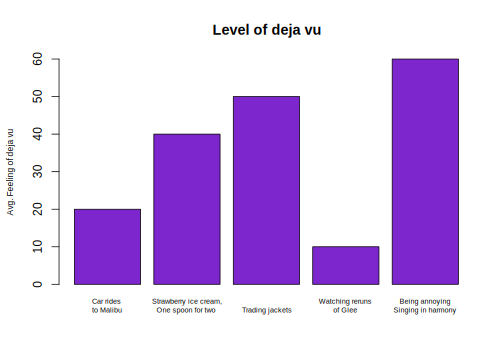
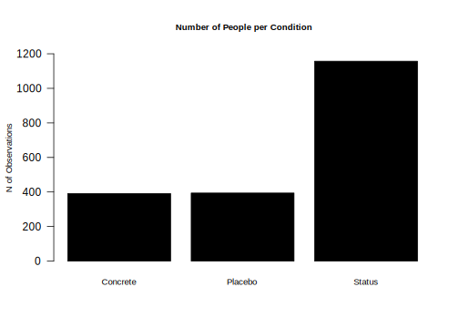

4.3 Barplots
Comparing frequencies (raw N), proportions, and/or means across categories

We will use the barplot() function.
- In contrast to the boxplot, the barplot function takes a vector of values that will serve as the top of the bars in the plot– it does not summarize a variable from within the function
- E.g., we could supply it a set of means to plot, not a raw variable
- Many of the other arguments are aesthetics that will give you deja vu after working with boxplot.
- This means that barplots are pretty easy to create in R. We can supply it a short vector of any values (e.g.,
valuesbar <- c(20, 40, 50, 10, 60)), and we could also supply it a vector of any names to label those values.- For real applications, this means we could supply a barplot with the output of a
tapply()function, atable()summarizing a single variable, or a set ofmean()values we have combined into a vector.
- For real applications, this means we could supply a barplot with the output of a
For example, in experiments, we may use barplots to compare the mean from the treatment group(s) \(\bar{Y}(1)\) to the control \(\bar{Y}(0)\) on some outcome. Let’s do it!
- First, we need the means. Let’s find the conditional means of economic views.
condmeans <- tapply(status$econcon, status$condition, mean)
condmeans # save as object to supply to the barplot function## Placebo Concrete Conspicuous Consumption
## 0.6340948 0.6647485 0.6724065
## Self-Esteem Social Approval
## 0.6564103 0.6904444The first input is the vector of means/proportions/frequency you want to plot.
barplot(condmeans,
ylim = c(0,1), # y-axis dimensions
names = c("Placebo", "Concrete", "Conspicuous",
"Self-Esteem", "Social"),
col = "black", # color of bars
main = "Mean Economic Views by Condition", # plot title
cex.main = .8, # size of plot title
cex.names = .8, # size of name labels
ylab = "Mean Views", # yaxis label
cex.lab = .8,# size of yaxis label
las = 1) # controls angle of axis labels
The remaining arguments alter the look of the plot to make it more informative.
- How could we improve this plot to make the interpretation easier?
4.3.1 Saving Plots
You can save an image of your plot as a png() to your working directory. Place png() just before your plot with a name in quotations, and then specify the dimensions. Place dev.off() at the bottom.
png("mybarplot.png", width = 7, height = 4, res=300, units="in")
barplot(condmeans,
ylim = c(0,1), # y-axis dimensions
names = c("Placebo", "Concrete", "Conspicuous",
"Self-Esteem", "Social"),
col = "black", # color of bars
main = "Mean Economic Views by Condition", # plot title
cex.main = .8, # size of plot title
cex.names = .8, # size of name labels
ylab = "Mean Views", # yaxis label
cex.lab = .8,# size of yaxis label
las = 1) # controls angle of axis labels
dev.off()4.3.2 Creating New Variables
The author theorizes that social approval, self-esteem, and conspicuous consumption are all elements of “status motivation.” We could analyze the results by collapsing them into a single category called “status motivation” and compare it to the other experimental groups.
- Create a new variable
conditionnew - Code the variable into new categories based on the values in the original
conditionvariable - Check the class of the new variable and convert if necessary
- Verify new variable by exploring values
status$conditionnew <- NA # create new variable
## Code new variable
status$conditionnew[status$condition == "Placebo"] <- "Placebo"
status$conditionnew[status$condition == "Concrete"] <- "Concrete"
status$conditionnew[status$condition == "Conspicuous Consumption" |
status$condition == "Self-Esteem" |
status$condition == "Social Approval"] <- "Status"
# class(status$conditionnew) check the class
status$conditionnew <- as.factor(status$conditionnew) # convertAn alternative way to create the new variable is through an ifelse statement.
- Can be read: If this relational statement is
TRUE, I assign you A, otherwise I assign you B - This often works best when we change factor variables to character
status$conditionnew2 <- as.character(status$condition)
status$conditionnew2 <- ifelse(status$condition == "Conspicuous Consumption" |
status$condition == "Self-Esteem" |
status$condition == "Social Approval",
"Status", status$conditionnew2)
status$conditionnew2 <- as.factor(status$conditionnew2)
table(status$conditionnew2)##
## Concrete Placebo Status
## 391 394 1157Note: Barplots don’t have to display means. We could also display frequencies. For example, let’s make a plot of the number of people in each condition using our new variable.
freqobs <- table(status$conditionnew)
barplot(freqobs,
ylim = c(0, 1200),
col = "black", # color of bars
main = "Number of People per Condition", # plot title
cex.main = .8, # size of plot title
cex.names = .8, # size of name labels
ylab = "N of Observations", # yaxis label
cex.lab = .8,# size of yaxis label
las = 1) # controls angle of axis labels